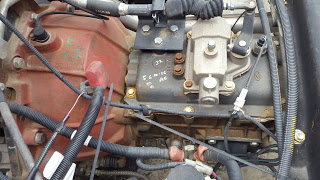
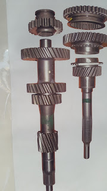

Gear Box Power transmission in automobile refers to the overall system of the automobile that is responsible for the motion transmission from the engine to the shaft and axle of the vehicle that are connected to the wheels of the vehicle. Generally gear box is referred to as the power transmission system in a vehicle that is responsible for motion transmission from the engine to the wheel. The term transmission simply refers to the gears and the gear trains that provides speed and torque conversion from rotating power source to another device. It is used to transmit engine torque to the driving wheels to run the vehicle on the road. GEAR BOX DESIGNIt can be clearly understood from the name itself,which means the housing for the gears and the gear trains in an automobile system. A gear box is a simple housing for the gear trains to be fit into. The gear box is connected to the engine block by the link of clutch plate in the flywheel of the engine block. The gear box is designed and manufactured according to the gears and the placement of gear trains in an automobile. Size of gear box vary according to the size of engine,vehicle, flywheel etc. Heavy box made of cast iron is sealed properly by using gaskets so that foreign particles do not enter the gear system. Gear box is also provided with a housing to hold the bearings of the gear shaft.A gearbox consists of different sizes of gears each having a unique function, speed and torque transmission ratios. Spur gear and helical gear are the most common type of gears used in the gear train in a gear box of an automobile. Usually a gear box consists of 6-8 gears connected in form of a gear train in a gear shaft. These gears in a gear train provides 5-6 speed transmission motion(i.e 1st, 2nd, 3rd, 4th, 5th, 6th gears). Along with these a neutral gear and a reverse gear is also provided. Neutral gear is used to disconnect the transmission of power from the engine to wheels where as reverse gear is used in reversing of a vehicle.
These gears are designed separately according to the need in the vehicle to be designed for. Each gears are designed with in the parameters as follows:
1. Torque transmission ratio
2. Speed transmission ratio
3. Size of the gear shaft
4. Size of the engine

For designing a gear various ratios such as:
1. Teeth ratio
2. Addendum and dedendum
3. Shape of the tooth
4. Pitch circle
5. Clearance and backlash
6. Module
7. Interference
are calculated and then designed in CAD software as per the calculation made. During the designing process each gears are separately designed and then assembled afterwards. The assembled gears are then meshed(using mesh function in CAD software) with each other to find out if the motion between the gears are according to need or not. The designed gear train is then passed through the simulation apps to check for the required torque. Mesh analysis tool is used to calculate torques in various section of the gears and the gear shaft. The obtained result from the simulation is further compared with the experimental result. If the design is found to be OK the design is selected or else the design is further optimized. After the completion of design and design verification the gear train and the gear box is passed to the manufacturing section. Gear are made up of various types of steels including cast iron, magnesium alloys and many more. These gears are manufacture with the precise measurement according to the calculations made before the calculation. Milling and lathe machines are used in manufacturing industry to precisely cut gear tooth and manufacture a workable gear and gear shaft. The gear box is usually manufactured by casting process using molten metal. After the completion of manufacturing process the gears are ready to be assembled and used in a vehicle for transmission process. |